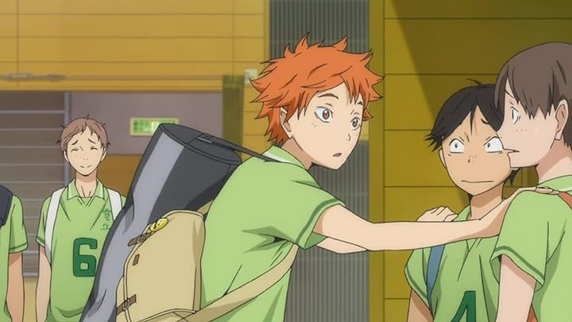
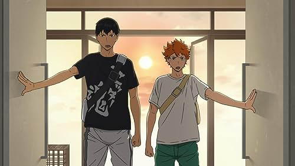
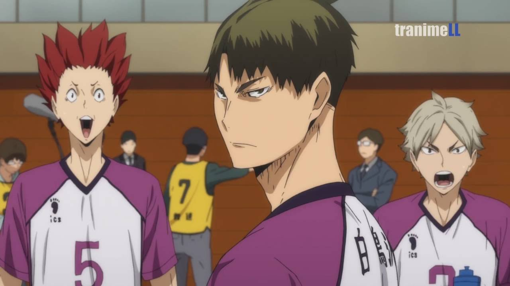
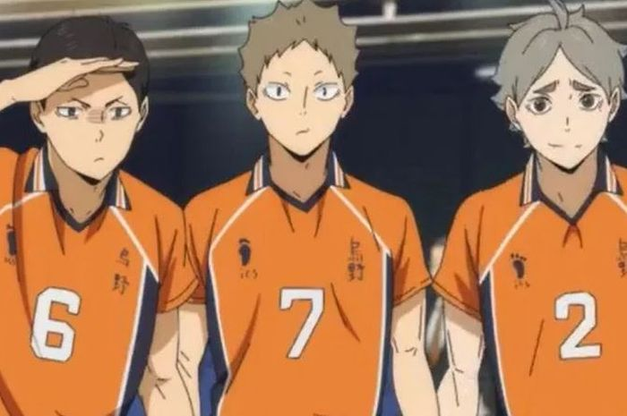
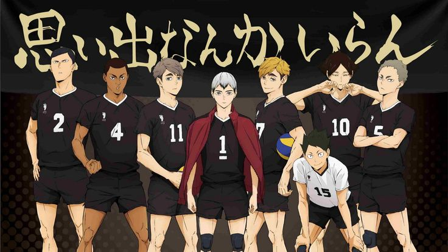

Kalau kamu penggemar anime sport, maka anime voli berjudul Haikyuu!! ini tak boleh kamu lewatkan. Kisahnya mengikuti dua siswa bernama Hinata dan Kageyama dalam usaha mereka menjadi pemain voli. Anime ini terdiri dari beberapa series, OVA, dan Movie.
"Kami tidak akan pernah menang jika kami tidak percaya kami bisa."
-Daichi Sawamura
Berikut ini adalah urutan series Anime Haikyuu!

Ini menjadi awal mula kisah Shouyou Hinata dan mimpinya untuk menjadi pemain voli berbakat.
Sejak menyaksikan kehebatan pemain bertubuh pendek yang dijuluki sebagai "Raksasa Kecil", Hinata telah membulatkan tekad untuk mengikuti jejak idolanya tersebut. Meski gagal saat masih di bangku SMP, dia tak lantas menyerah.
Hinata kini menjadi siswa di SMA Karasuno, sekolah yang melahirkan sosok "Raksasa Kecil" yang dikaguminya. Dia ingin membuktikan bahwa tubuhnya yang tak tinggi bukanlah penghalang, sebab dia akan mengandalkan kekuatan lompatannya.
Tak disangka-sangka, sang "Raja Lapangan" yang dulu pernah membantai tim voli SMP Hinata masuk ke sekolah yang sama dengannya. Dia adalah Tobio Kageyama, anak ajaib yang dikenal sebagai setter egois.
Meski keduanya terus berselisih sejak awal bertemu, tetapi Hinata dan Kageyama justru menjadi partner yang diwaspadai, menjadi kunci kebangkitan tim voli Karasuno yang tengah terpuruk.

Setelah mengikuti turnamen Inter-High, Karasuno terus melangkah ke depan dan fokus pada target berikutnya, yaitu turnamen Spring.
Bersamaan dengan itu, Karasuno mendapatkan kesempatan untuk berpartisipasi dalam kamp pelatihan yang dihadiri oleh banyak tim besar SMA skala nasional.
Momen emas ini tak disia-siakan begitu saja oleh Hinata, Kageyama, dan pemain Karasuno lainnya. Mereka terus berkembang sambil mempelajari permainan tim saingan mereka, mulai dari Nekoma, hingga Aoba Johsai.

Sang "Gagak Tanpa Sayap" alias Karasuno terus berusaha bangkit dari keterpurukan. Untuk bisa melaju ke babak tingkat nasional, Karasuno harus menghadapi Shiratorizawa terlebih dahulu.
Dalam tim tersebut, ada pemain terkuat dari Prefektur Miyagi, yaitu Wakatoshi Ushijima. Dia bahkan diakui sebagai tiga pemain voli SMA terkuat di Jepang.
Kesempatan emas ini harus Karasuno manfaatkan semaksimal mungkin, mengingat turnamen nasional yang menjadi target mereka adalah ajang nasional terakhir yang bisa diikuti pemain tahun ketiga, seperti Sugawara, Daichi, serta Asahi.

Kembali ke sudut pandang tim Karasuno, tepatnya setelah keberhasilan mereka mengalahkan Shiratorizawa dan memastikan langkah mereka menuju turnamen nasional.
Kageyama mendapatkan undangan untuk ikut serta dalam All-Japan Youth Training Camp. Tak mau kalah, Kei Tsukishima pun mendapat undangan pelatihan rookie di Prefektur Miyagi.
Dengan begitu, Hinata menjadi satu-satunya pemain inti di tahun pertama yang tak menerima undangan pelatihan. Tak tinggal diam, dia melakukan hal nekat dengan menyusup ke kamp pelatihan yang dihadiri Tsukishima.

Karasuno membuka perjuangan mereka di kejuaraan nasional dengan menghadapi Akademi
Tak hanya harus menemukan cara menaklukkan Miya Bersaudara, Karasuno juga dibuat kesulitan dengan supporter Inarizaki yang cenderung mengganggu fokus mereka.
Akankah Karasuno mampu melangkah lebih jauh?
Anime ini belum berakhir. perjuangan karasuno untuk meraih top 1 tinggal selangkah lagi
Februari 2024 nanti akan ada Movie terakhir dari Haikyuu!
Jadi buat kalian yang masih setia menunggu Movienya bisa nih re-wacth animenya lagi